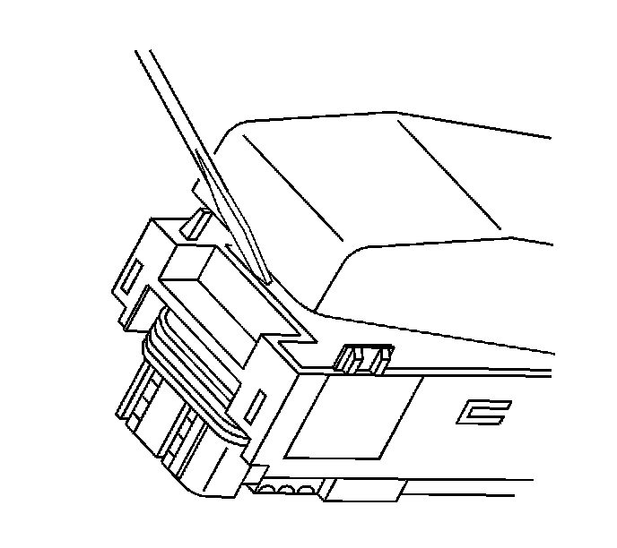
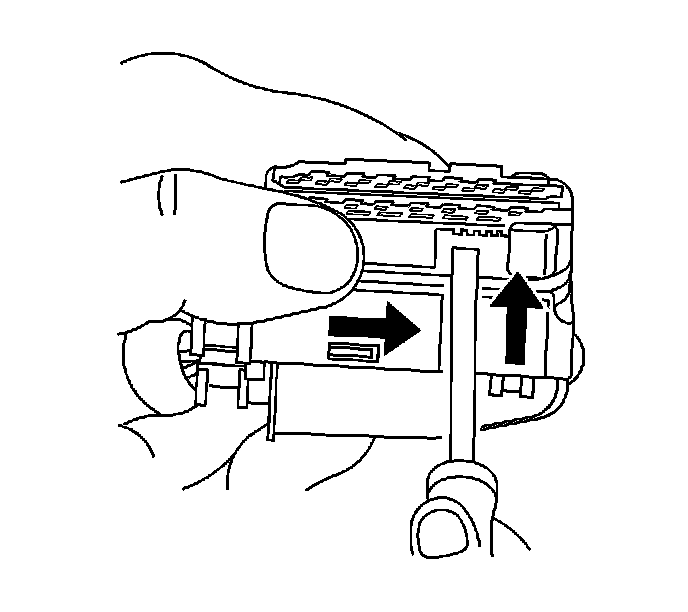
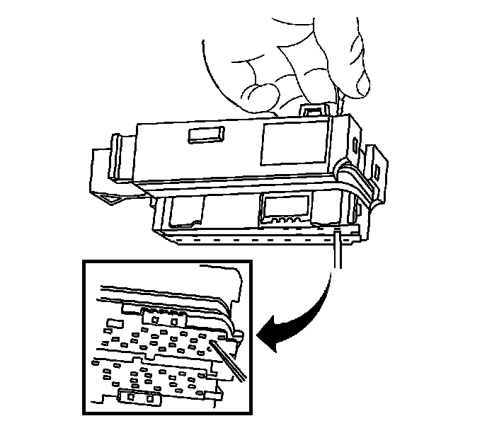
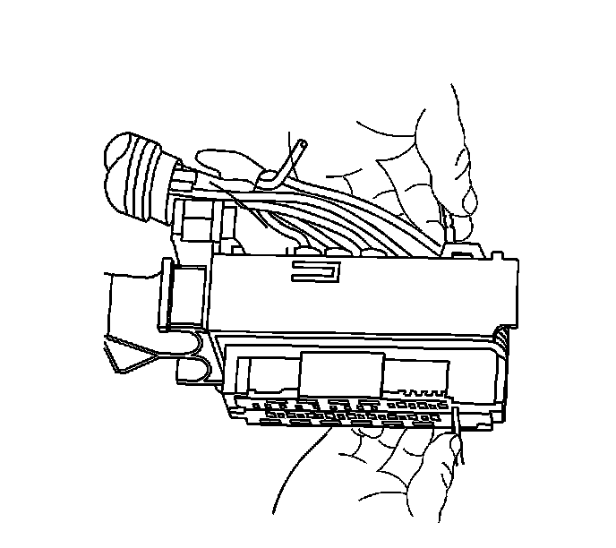

Tyco/Amp Connectors (CM 42-Way)
TYCO/AMP CONNECTORS (CM 42-WAY)
TOOLS REQUIRED
J-38125 Terminal Repair Kit
REMOVAL PROCEDURE
1. Locate the connector position assurance (CPA) on the connector body and pull the CPA out. The CPA is on the wire harness side of connector.
2. Disconnect the connector from the component.

3. Use a small flat-bladed tool to gently pry off the dress cover by inserting the tool under the cover opposite the harness side and prying up.
4. Remove the cover.

5. Using a small flat-bladed tool, push on the side of the nose piece retainer while pushing the nose piece forward with your thumb. This will release the terminal position assurance (TPA).

6. Insert the J 38125-12A (GM P/N 12094429) into the corresponding terminal release cavity. The release cavities are the 2 center rows of cavities on one half of the connector.

7. Pressing the J 38125-12A (GM P/N 12094429) tool in the release cavity of the terminal you are removing, gently pull the wire out of the back of the connector. Always remember never use force when pulling a terminal out of a connector. See the release tool cross reference in the Reference Guide of the J-38125 to ensure that the correct release tool is used.
TERMINAL REPAIR PROCEDURE
Use the appropriate terminal and crimper in the J-38125 in order to replace the terminal.